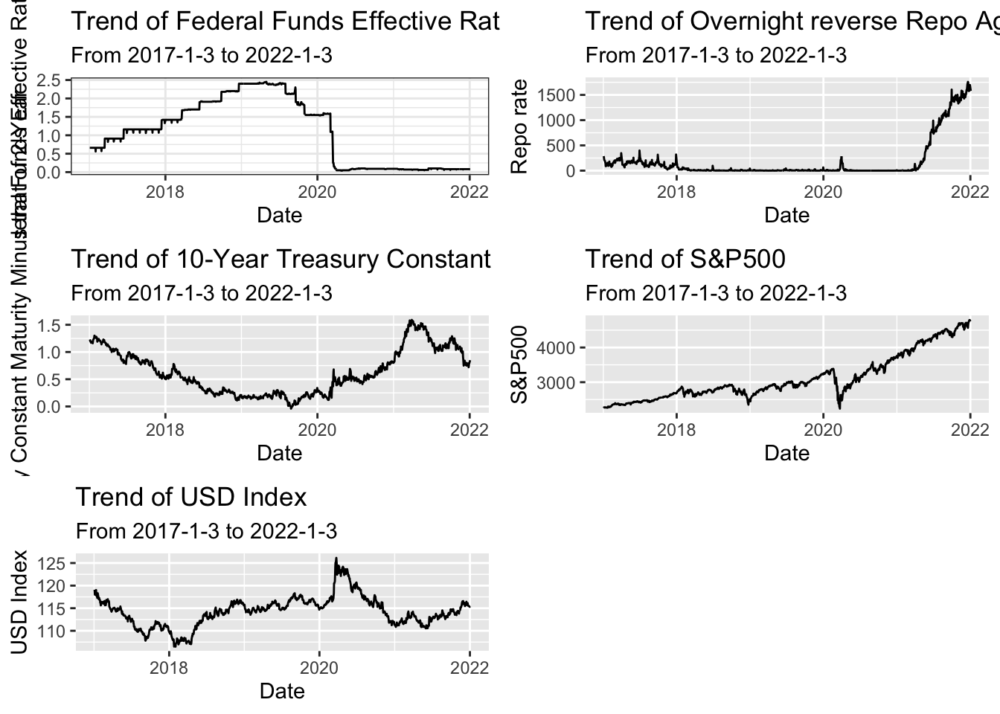
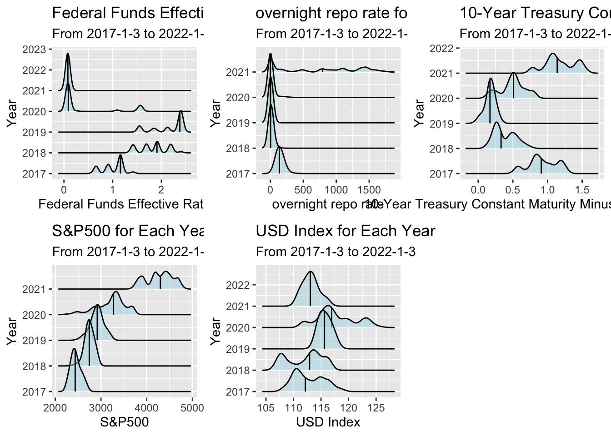
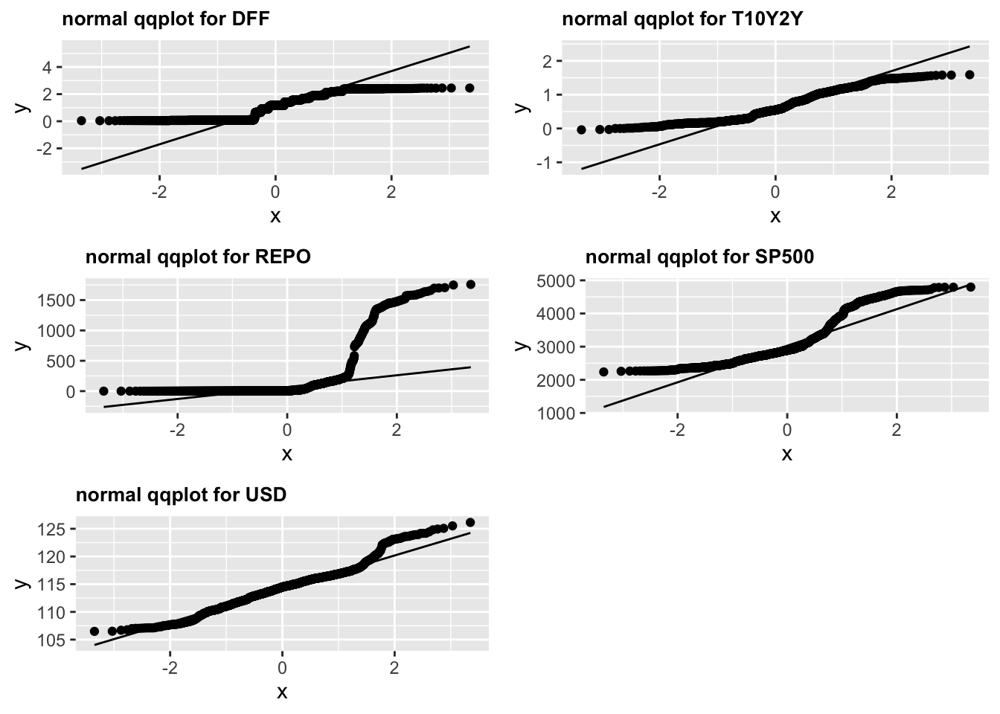
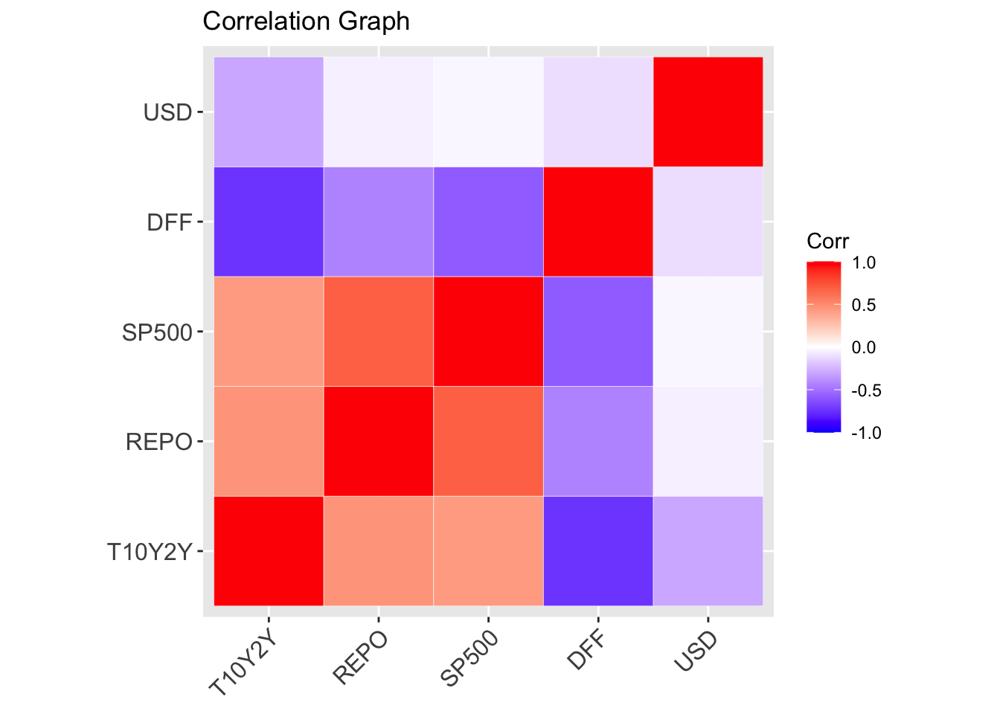
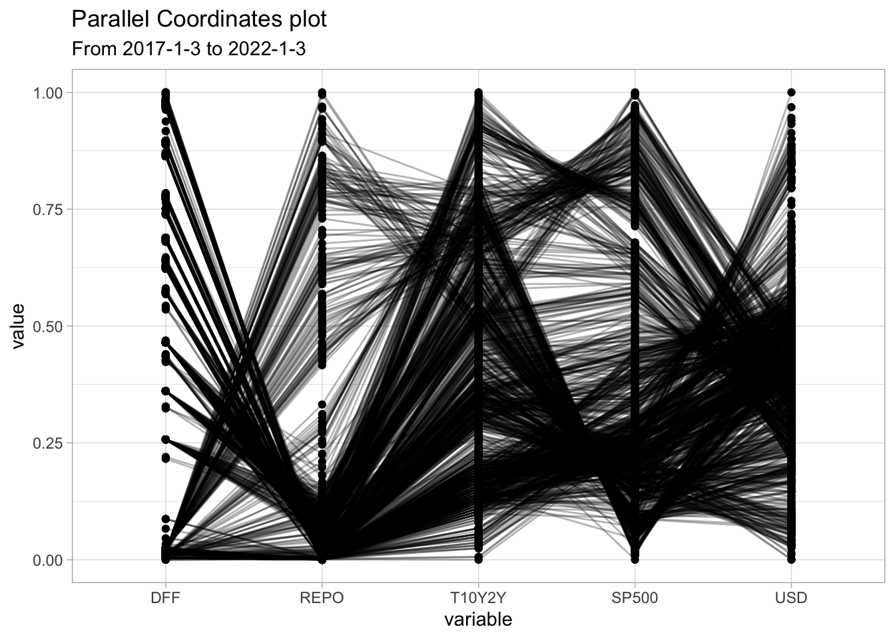
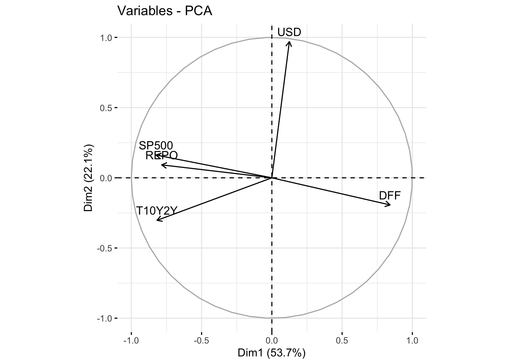
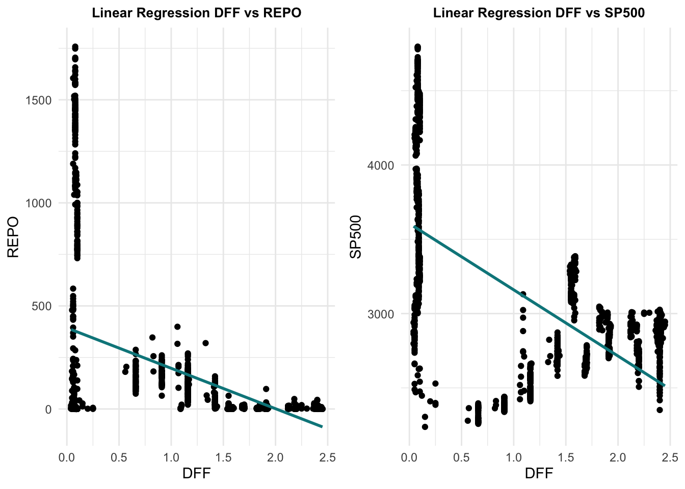

Chapter 4 Results
4.1 Graphs
For the results of the analysis, we plotted the trend of each variable to see their pattern through the years and link possible economic situations to it. Then we plotted the ridge plots for each variable to further show their fluctuations each year. We then used a normal Q-Q plot to see if these variables are normally distributed. We then used parallel coordinates plot to take a first look at the relationship among variables, then we used correlation plots, PCA, and Linear regression plots to discover their relationship step by step. Then based on the analysis, we will induct certain logic behind these variables and summarize our findings.


From the trend graph, we can observe that:
Federal Funds Effective Rate: The DFF increases from 2017 to 2020 and there is a sudden drop in 2020. After 2020, the DFF remains at a relatively lower level.
The Overnight Reverse Repo Agreements: The reverse REPO is the amount of money the Federal Reserve is getting back from the market. From the graph, we can see that the amount in dollars remained low before the year 2021, and starting from 2021, the amount increased tremendously.
10-Year Treasury Constant Maturity Minus 2-Year Treasury Constant Maturity: The T10Y2Y showed a round pattern from 2017 to 2022. It decreases from 2017 and started increasing fast since 2021.
SP500: The SP500 in general has a relatively steady increase pattern. It had a sudden decrease in 2020 and quickly recovered and continued increasing.
USD Index: The USD Index has a strong increase in the year 2020 and generally remains on a constant level.
From the economic perspective, if the government starts to print money, then its interest rate will fall, also asset prices will go up. The overall economic activity will increase and more money will be inflow into the stock market. From our observation in the graph, 2020 is an important year, the Federal Reserve Bank started to print money to ease the impact of the pandemic. Therefore, the US interest rate started to decrease as we can see from the DFF’s trend. At the same time, the SP500 in 2020 had a strong increase at the roughly same time when the DFF decreases, there might be a correlation between them. Also, we can see that the Reverse Repo Agreements and the DFF have a reverse trend. We will look into their relationship in detail in later graphs.

From the above normal QQ plots, we can see that only the USD Index is roughly following the straight line indicating only the USD Index follows the normal distribution.
Then we start looking at the relationship among these variables:

From the correlation graph, we observe that the 10-Year Treasury Constant Maturity Minus 2-Year Treasury Constant Maturity has a positive correlation with the Reverse REPO and the SP500, and a negative correlation with DFF and USD. The REPO has a positive correlation with SP500 and a negative correlation with DFF. The SP500 also has a negative correlation with DFF. For USD, we can see that it has a slightly negative relationship with T10T2Y while nearly no correlation with the others.
From the parallel coordinates plot, we find that DFF and REPO have a clear sign of a cross, which confirms our findings in the correlation graph. The REPO and T10Y2Y show more one-direction lines from left to right, which means they are positively correlated, which confirms our conclusion from the correlation graph. We do not see a clear pattern of correlation with T10Y2Y&SP500 and SP500&USD.
## PC1 PC2 PC3 PC4 PC5
## DFF 0.51349976 -0.18383927 0.5051980 -0.2010483 0.6378681
## REPO -0.47835577 0.08758334 0.5631093 -0.6261887 -0.2330247
## T10Y2Y -0.49871729 -0.28810356 -0.4705739 -0.3040259 0.5953199
## SP500 -0.50297351 0.15432971 0.4210722 0.6635186 0.3250250
## USD 0.07610828 0.92288188 -0.1701212 -0.1864902 0.2806720## PC1 PC2 PC3 PC4 PC5
## [1,] -0.3491305 0.8175879 -1.571887 -1.647676 0.4761562
## [2,] -0.3259571 0.7650869 -1.571491 -1.582256 0.4626752## PC1 PC2 PC3 PC4 PC5
## [1,] -1264.241 483.0359 1091.950 1295.533 701.496
## [2,] -1260.815 483.0203 1085.736 1317.152 710.470
From the principle component biplot, we can see that SP500 and REPO have a positive correlation and are driven by one factor, The DFF is in the other direction with SP500 and REPO which means the DFF has a negative relationship with them. The USD has a 90-degree angle with SP500&REPO and DFF, which indicates it has no relationship with these variables at all, this confirms our findings in the correlation graph. From the PCA plot, we cannot see the relationship between the T10Y2Y and others.

Finally, the linear regression graph trip confirms the relationship between DFF and REPO, DFF, and SP500 as they all show a downward slope.
4.2 Possible Reasons behind the findings
By combining the economic theory and the above relationship we found, the inducted explanation behind the above relations is the following:
DFF & Overnight Reverse Repo Agreements: The DFF and Reverse REPO are all decided by the Federal Reserve Bank, the lower DFF(US interest rate) means to provide the market with liquidity. The increase in Reverse REPO is an action to get money back from the market, which is an action to decrease liquidity. Therefore the above two variables have a negative correlation since they work in opposite directions.
DFF & SP500: The decrease of the US interest rate(DFF) will provide the market with liquidity, especially in 2020 when we see people losing their jobs, and companies at the edge of bankruptcy, the FED lowered the interest rate and provided the market with liquidity. People get covid payments, companies could easily get loans with almost 0 interest rates to keep in business. My induction on the increase of SP500 when interest rate decreases are that, not all companies and families are going to bankruptcy at that time. There are a large of amount of people and companies who received benefits from the Fed’s low-interest rate and invested the money they got into the stock market. Therefore the SP500 increased sharply when the interest rate decreased sharply.
DFF and 10-Year Treasury Constant Maturity Minus 2-Year Treasury Constant Maturity: A possible reason why these two have a negative correlation is that, when the DFF decreases, as the stock market(SP500, NASDAQ) blooms strongly, people tend to invest in the short-term for the quick and higher return. When the interest rate starts to increase again, money will flow back to the FED from the market and the blooming of the stock market may stop, therefore people will rather invest in long-term assets.
In the end, the FED is increasing the Federal Funds Effective Rate recently, and therefore we may see the SP500 go down and the spread between the 10-Year Treasury Constant Maturity and 2-Year Treasury Constant Maturity goes wider. People and the capital markets may see the short-term economy negatively and choose to invest in long-term assets for stability.